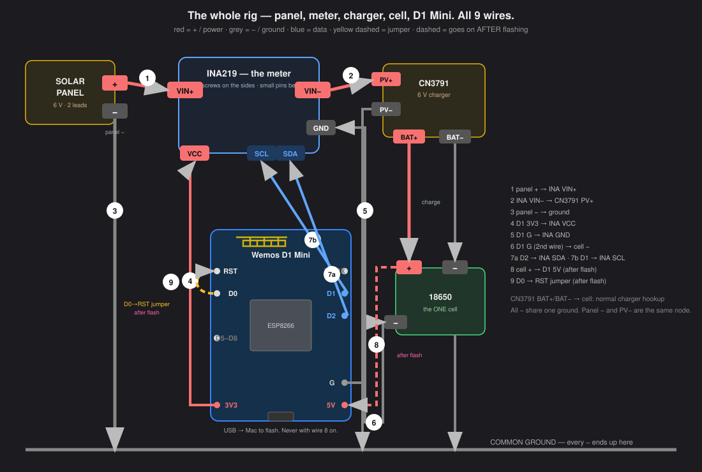
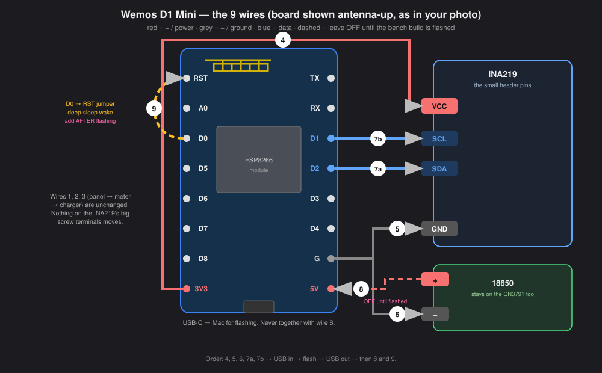

Measures the panel's real volts, milliamps, watts · Wh per day charted forever · no resistors · fully self-contained in the IP67 box
The idea in one line: the INA219 sits in the panel's + wire like a water meter in a pipe — everything the panel produces flows through it and gets counted.
Step 0 — one bit of soldering
The INA219 board arrives with its 6-pin header loose in the bag. Solder the header into the row of 6 small holes (pins pointing up). Five minutes, same as the sensor wiring you've done before. The two big screw terminals need nothing.
The wiring — 9 wires, split into two easy jobs
Every wire has a colour:red = + / power, grey = − / ground, blue = data. Match the colour and you can't get it wrong. Do Job 1 (power) first, then Job 2 (signal).
The full picture — one battery, one ground
There is only ONE battery. The panel charges the 18650 through the CN3791, and the same 18650 powers the D1 Mini. The battery + is a junction: one wire in from the charger (BAT+), one wire out to the D1 Mini (5V pin, wire 8). Every − in the whole rig joins one common ground.

The one 18650 does two things at once: the CN3791 keeps it charged from the sun, and the ESP draws from it. Nothing plugs into the wall — the panel is the only energy in.
Job 1 — the power path (wires 1, 2, 3)
The panel has only two leads: + and −. The + lead is cut in half — one half goes INTO the meter, a new wire comes OUT the other side to the charger. The − lead ignores the meter completely and runs straight to the charger.
The charger's other side (its B+/B− terminals) goes to the 18650 exactly as a CN3791 normally does — that's not one of the 8 numbered wires, it's the standard battery hookup.
Job 2 — meter to the brain + self-power (wires 4–8)
These are the small header pins you soldered in Step 0 — thin wires, not the fat screw terminals. Four go to the D1 Mini, two power wires so the rig runs off its own battery, and one jumper on the D1 Mini itself for deep sleep.
Board changed 17 Sep 2026. The clone ESP32-S3 DevKit's AMS1117 regulator cannot run from the 18650 — measured 4.14 V in, 2.42 V on the 3V3 rail, chip never boots. Replaced with a Wemos D1 Mini (ESP8266), whose low-dropout regulator holds 3.3 V from the cell. Pins below are the D1 Mini's. Wire 9 is new.
The D1 Mini, pin by pin
Board drawn antenna-up, matching the photo. Solid wires go on first; the two dashed ones (battery + and the D0–RST jumper) go on only after the bench build has been flashed over USB.

Wire list — the whole 9
#
Colour
From
To
1
red
Panel + lead
INA219 VIN+ screw (IN)
2
red
INA219 VIN− screw (OUT)
CN3791 PV+
3
grey
Panel − lead
CN3791 PV− (straight through, INA not involved)
4
red
D1 Mini 3V3
INA219 VCC
5
grey
D1 Mini G
INA219 GND
6
grey
D1 Mini G (same pin, 2nd wire)
Battery − / CN3791 ground side
7
blue
D1 Mini D2 → INA SDA
D1 Mini D1 → INA SCL
8
red
Battery + node
D1 Mini 5V pin (pull this whenever USB is plugged in)
9
any
D1 Mini D0
D1 Mini RST — deep-sleep wake jumper (short wire on the board itself)
Two rules: wire 6 is not optional — without the shared ground the voltage numbers are garbage. And direction matters on the meter: panel side into VIN+, charger side out of VIN−, or every current reading comes out negative.
Power — self-contained, no cords: one more wire: battery + → the D1 Mini's 5V pin (ground is already shared via wire 6). The ESP runs off the rig's own 18650 and the firmware deep-sleeps between 5-minute readings so the panel easily sustains it. The one rule: whenever USB goes in for flashing, pull the 5Vin wire out first — never both at once.
Then
1
USB into the Mac once — say the word and I flash solar-logger-d1.yaml from here
2
Unplug USB, reconnect the 5V wire, panel in the sun → HA shows volts, mA, W live; the portal's live section fills from the permanent record
3
Seal in the IP67 box, panel out, leave it. "Solar Harvest Today (Wh)" is the number the whole test exists for